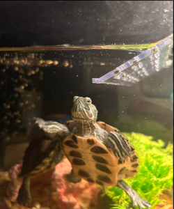
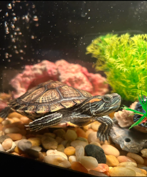

Hi, my name is Etornam and I'm a second year majoring in ITM. I'm originally from Ghana but I moved here when I was 4 and lived in Chicago practically all my life. In my free time I like to solve jigsaw puzzles and binge watch TV-Shows. At the moment I'm currently binging Love is Blind and rewatching Attack On Titan.
A little fun fact I have two turtles named Bobinna and TuTu who are Cumberland Sliders. During the summer in July some friends and I were in Chinatown and decided to impulsively buy turtles. I thought the container the turtle came in would suffice and a turtle would be a low maintinece pet but it wasn't until after I bought TuTu that I did research on how to take care of a turtle. My little brother bought a turtle a week after so that Tutu could have a friend. After hours of research and hundreds of dollars spent on the perfect habitat later I found that turtles aren't as low maintince as I thought however it's all worth it! I'm not sure what their genders are and I won't be able to tell until they're about a year old but as of now Bobinna(formerly known as a male turtle "Bob" by my brothers) is female and Tutu unfortunately is a male as well. They're only 7 months old at the moment but I'm hoping they're both female. Currently I'm trying to teach them how to do a backflip.
This is Bobinna my brothers turtle. She's about 4 inches in length and likes to be held and roam in grass. In the grass she likes to do this thing where she burries herself under the blades of grass for what reason I'm not sure.
This is my turtle Tutu. He's about 6 inches in length and is a bit more scared of being held but if needed he will bite your finger. Tutu likes to do this thing where he tries to eat/bite everything as if he's never had a meal in his life.